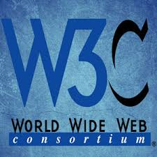

ALVO FRONTEND

JavaScript, frequentemente abreviado como JS, é uma linguagem de programação interpretada de alto nível, caracterizada também, como dinâmica, fracamente tipada, prototype-based e multi-paradigma. Juntamente com HTML e CSS, o JavaScript é uma das três principais tecnologias da World Wide Web - fonte: Wikipedia
Se você estava em busca de sites onde poderia aprender JavaScript de graça, não precisa mais procurar ! . Eu trouxe uma lista com alguns sites que ensinam JavaScript do básico, ou seja, você não precisa ter nenhum conhecimento prévio com linguagens de programação para começar a aprender. Vale resaltar que grande parte dos sites são da lingua inglesa, uma vez que grande parte de conteúdos grátis e de qualidade são em inglês
1) w3cschools.com - Seria um grande erro não começar a lista com o site da w3c, que é uma organização que busca a padronização da World Wide Web. Consiste em um consórcio internacional com quase 400 membros, agrega empresas, órgãos governamentais e organizações independentes com a finalidade de estabelecer padrões para a criação e a interpretação de conteúdos para a Web Fonte: wikipedia Clique aqui para ir ao site
2) edx.com - Além de encontrar cursos para area de técnologia da informação, você também encontrar conteudos para as mais diversas areas do conhecimento que vai da matemática, história, cursos de Excel etc.. Ao se cadrastar no curso você pode participar como ouvinte de forma gratuita, se deseja ter o certificado é necessário pagar, no entanto, de forma gratuita você tera acesso praticamente todos os cursos que são oferecidos por empreas como google, microsoft entre outras.Clique aqui para ir ao curso
3)Coursera - Coursera assim como EDX, possuí um grande acervo de cursos, que vão de cursos de inglês, engenharia e claro, desenvolvimento para web, mas diferentemente do EDX, alguns cursos são pagos e portanto é necessário garimpar para encontrar o curso que deseja Clique aqui para ir ao site

4) FreeCodeCamp - é uma organização sem fins lucrativos que consiste em uma plataforma web de aprendizagem interativa, um fórum de comunidade on-line, salas de bate-papo, publicações Medium e organizações locais que pretendem tornar a aprendizagem de desenvolvimento web acessível à qualquer pessoa. Com certeza o site FreeCodeCamp é uma das melhores fontes de aprendizado online, possuí uma interface amigável além de um fórum de discussão sempre ativo.clique aqui para ir ao site


Qualquer tecnologia suficientemente avançada é indistinguível da magia.
Arthur C. Clark